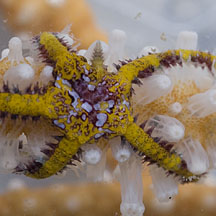
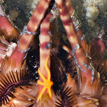
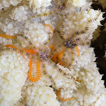
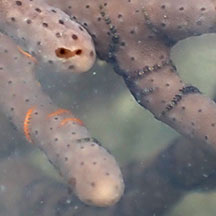
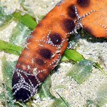

|
|
| brittle stars text index | photo index |
| Phylum Echinodermata > Class Stellaroida > Subclass Ophiuroidea |
| Tiny
colourful brittle stars Ophiothela danae* Family Ophiotrichidae updated Apr 2020 Where seen? These tiny brittle stars are sometimes seen on sea fans, flowery soft corals and other cnidarians and even on Thorny sea urchins. A single host can be home to many of these tiny brittle stars. But it requires a keen eye to spot them. Features: Whole animal about 1cm wide. 5-6 arms with very small spines, held flat, along the sides of the arm. Arms with colourful bands usually to match the host animal. Central disk also with colourful markings. Sometimes confused with the Tiny orange brittle star which are found on Asparagus soft corals. |
|
 Changi, Jul 12 |

| Sometimes confused with the Tiny orange brittle star which are uniformly orange. The two kinds of tiny brittle stars are sometimes seen together. |
 On pencil sea urchin spine. Cyrene Reef, Feb 16 Photo shared by Loh Kok Sheng on his blog. |
 Chek Jawa, Oct 16 In Spiky flowery soft coral |
 Cyrene Reef, Aug 20 In Leathery sea fan |
*Species are difficult to positively identify without close examination.
On this website, they are grouped by external features for convenience of display
| Tiny colourful brittle stars on Singapore shores |
On wildsingapore
flickr
|
| Other sightings on Singapore shores |
 On Knobbly sea star Changi Carpark 7, May 21 Photo shared by Loh Kok Sheng on facebook. |
|
Links
References
|